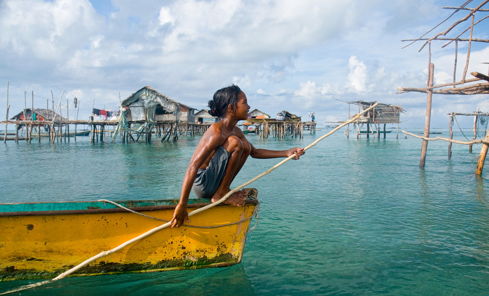
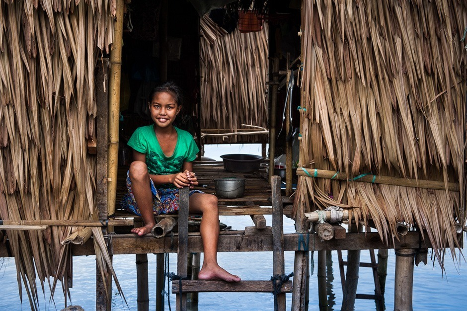
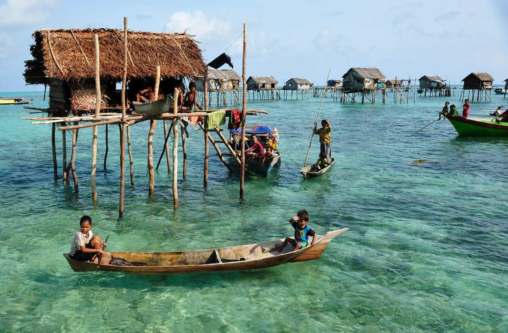
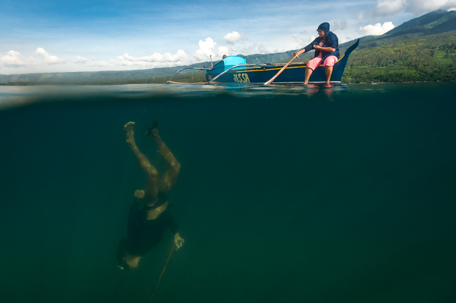
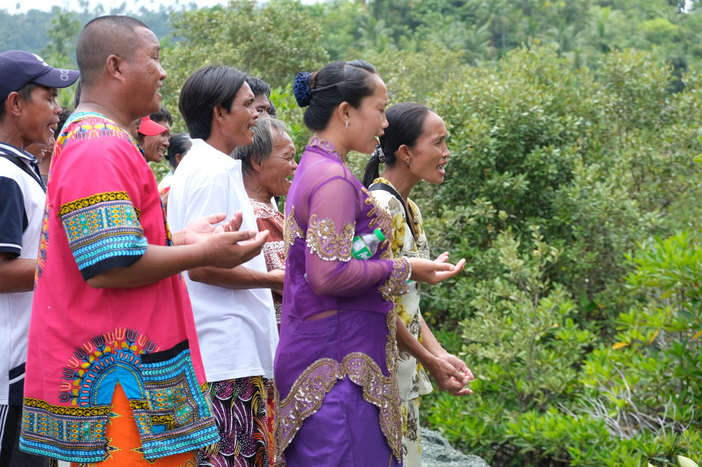
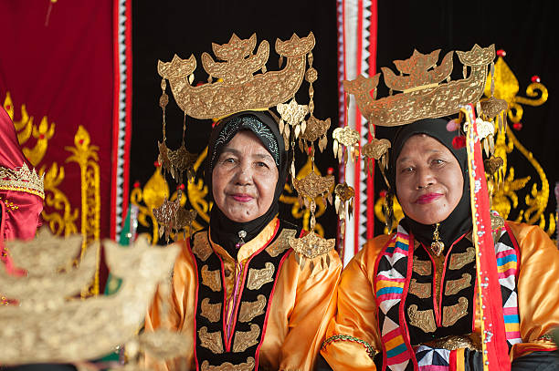

The Badjao’s daily rhythm revolves around the sea...
A typical day starts with fishing and gathering marine resources
Traditional lepa boats served as their mobile homes, allowing them to live nomadically across the Sulu Sea.
The iconic lepa boat - a floating home for the Badjao people
For those who settled along coastlines, traditional stilt houses were built over the water, connected by wooden walkways.
Coastal settlements featuring houses built on stilts
Fishing, diving, and boatmaking form the core of Badjao livelihood, with skills passed down through generations.
Traditional fishing methods and pearl diving techniques
Nature-based rituals and sea spirits; today, many Badjao practice Islam while maintaining some traditional beliefs.
Cultural ceremonies blending traditional and Islamic practices
Women wear colorful blouses with intricate embroidery; men wear traditional garments designed for mobility on water.
Traditional attire reflecting their maritime lifestyle
This website is a school project. All images and content are used strictly for educational purposes only.
Copyright belongs to their respective owners.